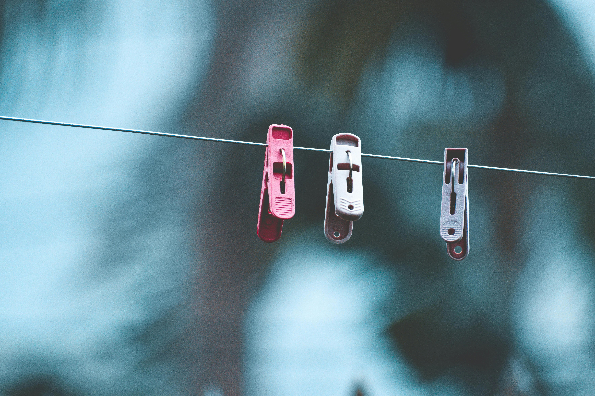
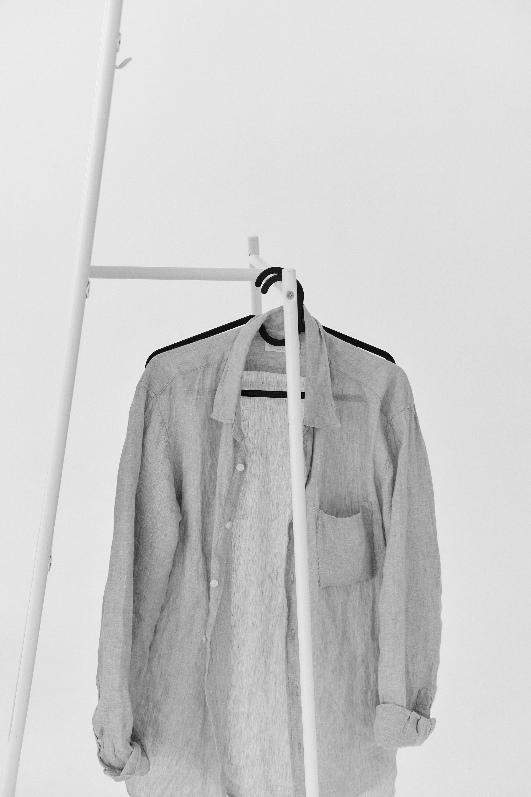

Your cleaning Adda. Your Choice.
Pressed and on hangers, or neatly folded?
Laundry >
Perfect for every laundry, items are returned neatly crispy folded. Every cloth goes through a comprehensive process enabling us to deliver on the promise of sparkling & fresh clothes everytime.
Wash & fold 50 Rupees Kg | Wash & Iron 80 Rupees Kg | Premimum Laundry 150 Rupees.

Dry Cleaning >
All clothes are cleaned with environment-friendly solvents, State-of-the-art machinery is used to process the clothes where they are treated with highly acclaimed and commercially used solvents.
Shirts / Trouser / Kurta / Salwar and many more...
